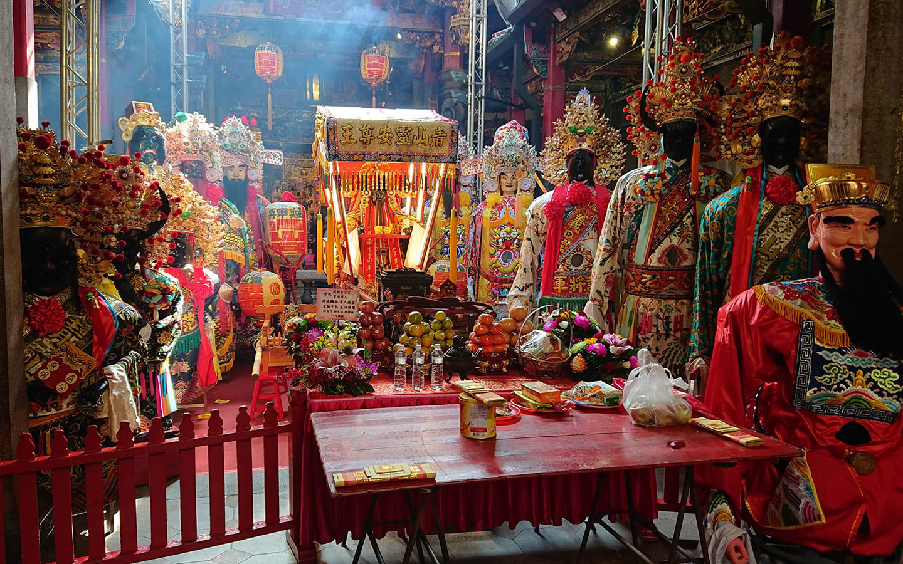

文化記事:青山宮與艋舺大拜拜

如果耳裡住了一只蟬，那會是怎麼樣的情形？
你的耳裡住了一只蟬，我在無意中發現的。
那一天中午我聽見隱約的沙沙聲，是從你那邊發出來的。
我確信當時沒有風，沒有人拖著步伐經過，也沒有蟲爬過塑膠袋(或許)。
沙沙聲是從你身上傳出來的，而你正趴在桌上睡午覺。
你睡得很熟，晃了晃肩膀也不見你醒來。
我發現沙沙聲愈來愈大，我聽到是從你右耳裡傳出來的。
你的耳裡一定住著一只蟬。只是我不知道是怎麼發生的。
我只能想像那一定是一個這樣的夏天，你正趴在桌上睡得正酣。
一只蟬就這樣飛進你的耳裡，或是從你耳裡長了出來。
我一無所知，也無從想像，有些事情好像不會按照常理般的出現。
蟬的叫聲很大聲，遠遠的聽自有一番氣味，
所以有人寫了甚麼「因為蟬叫聲而顯得山林間很安靜」的句子，但是蟬活在耳朵裡，我無法想像。
我猜你當時一定被驚醒了，或者夢到突然身處瀑布底下的山洞，被一大片聲浪排擊。
耳裡住了一只蟬，那到底是怎麼樣的情形？我想像你的世界從此改變，
你再也不能聽見正常的聲音，因為你的右耳始終轟然。
你無法聽音樂，音樂只能在蟬噪下化成殘篇斷簡。
你甚至無法聽見別人說話，你只能吃力的看著嘴型拼湊著耳邊零落的語句。
我沒有辦法準確地替你形容那樣的感覺，或許你就像離岸的礁石，
成天孤立的在海中被浪撞擊，成天地聽著浪濤浪裂聲。
或許你就像眼鏡蒙上了一層髒汙，看得見世界卻永遠陷在一片濃霧。
或許你的世界從此扭曲了，
觸摸著一件物品都會覺得它彷彿在震動，彷彿世界都跟著音波跳動起來。
你終於醒了。你說你知道有一只蟬，但是吵了幾天之後好像就不見了。
不見了？
「恩，我再也沒聽過它吵了，過了幾個禮拜吧，聲音就漸漸的小了。
只有晚上的時候好像還有點感覺，它或許就已經飛走了。」
怎麼可能。
我能想像的是你日復一日的厭煩，日復一日的焦躁，日復一日的生氣。
你無能為力，也無計可施。
蟬聲永遠在你的耳邊廝聲咆哮，而你的情緒不安的無限膨脹。